narita to shirako
heading south-snake-east..i think..
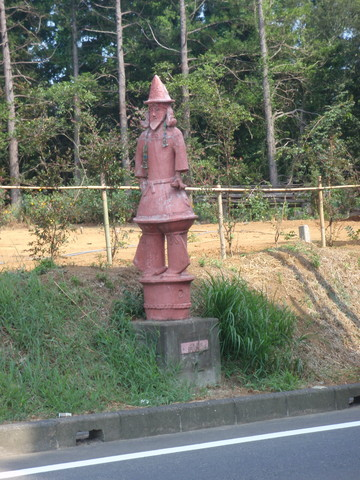 haniwa
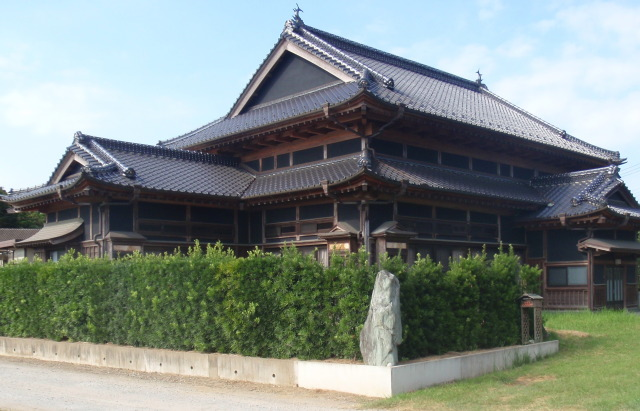 green schist or 伊予青石
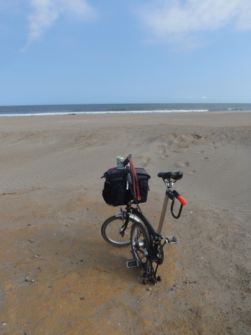 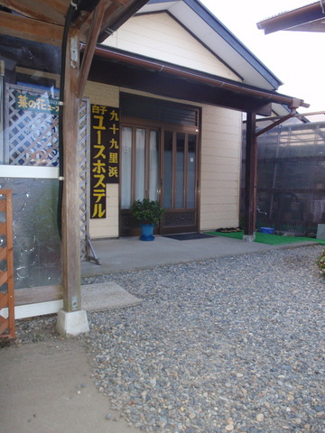
shirako to chikura
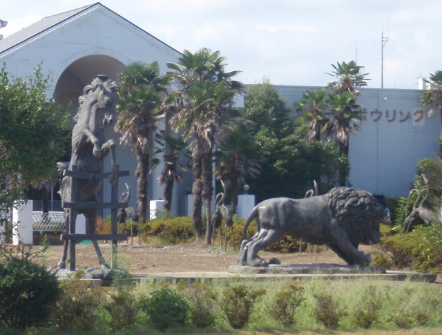 Ohara Garden
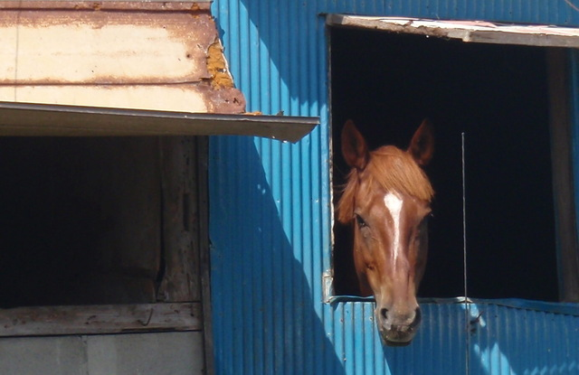 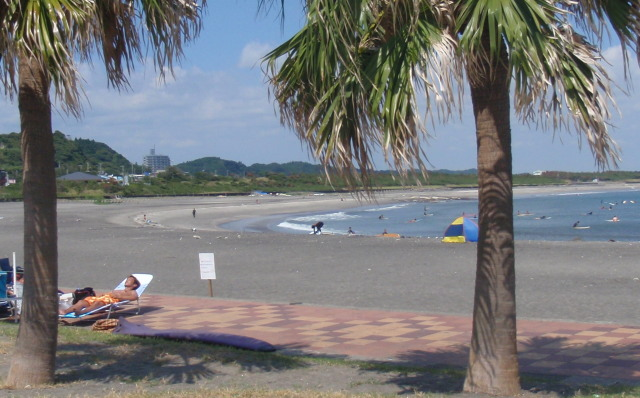 old boys club 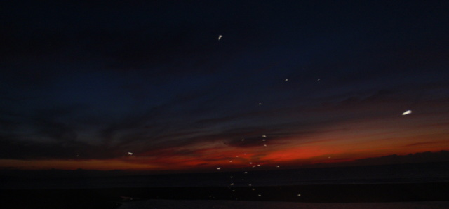
chikura to shirahama
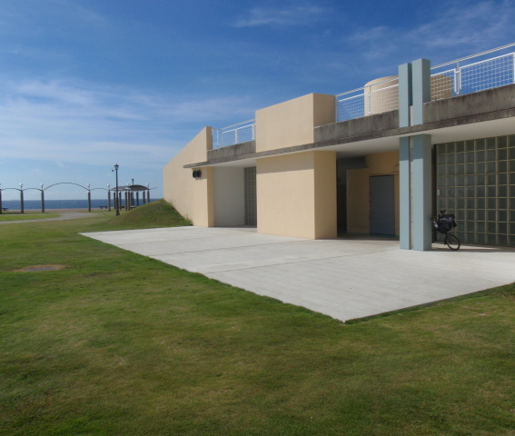 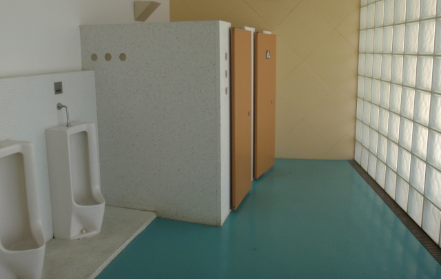 a fine bathroom
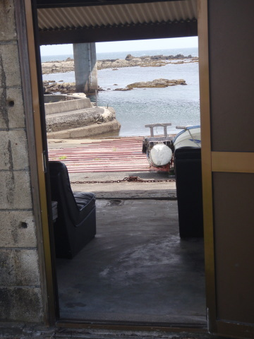 mazegohan 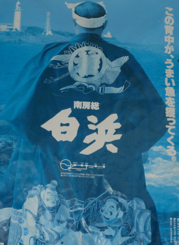 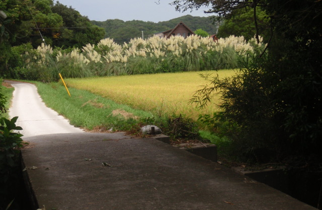
heading south-snake-east..i think..
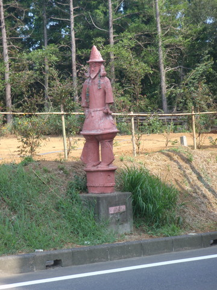 haniwa
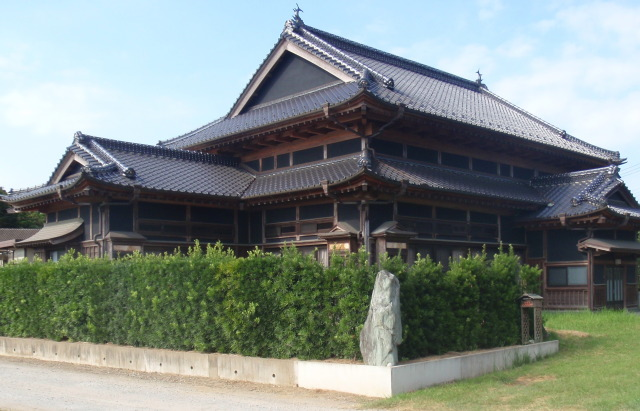 green schist or 伊予青石
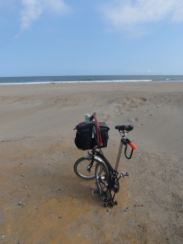 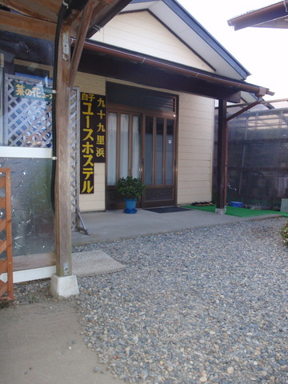
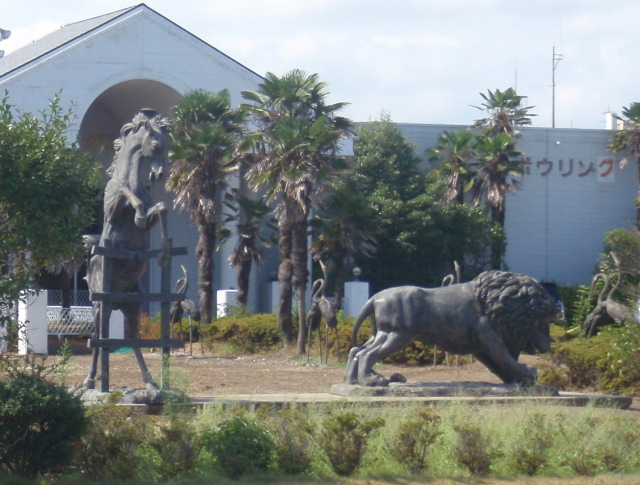 Ohara Garden
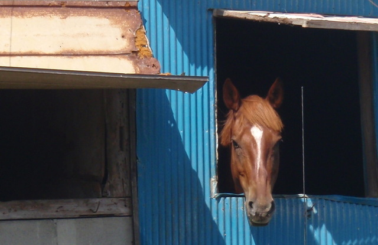 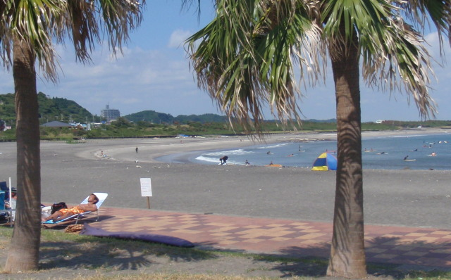 old boys club 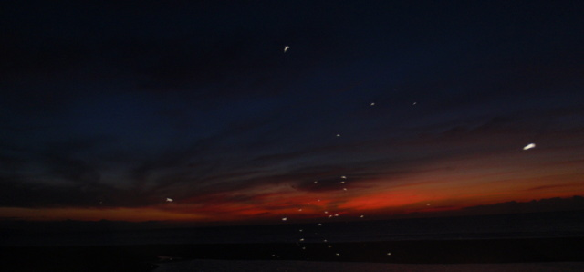
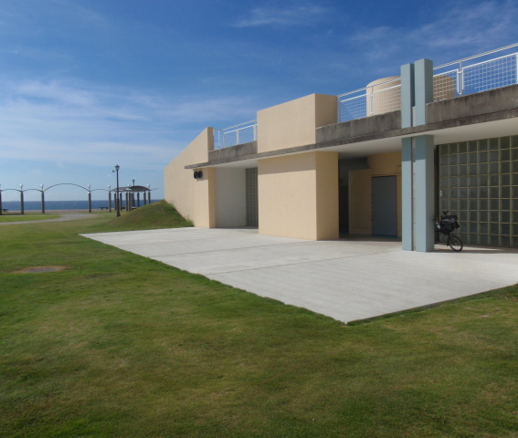 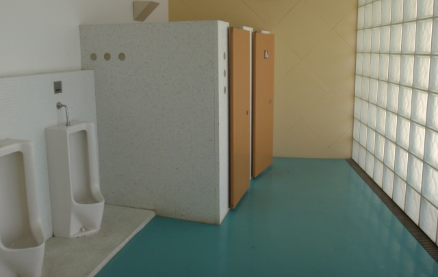 a fine bathroom
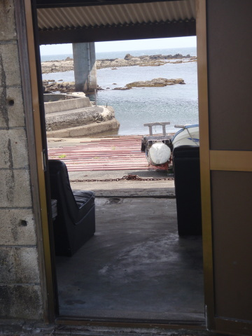 mazegohan 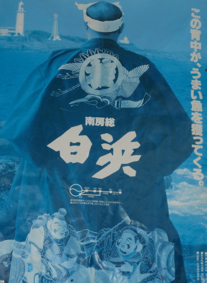 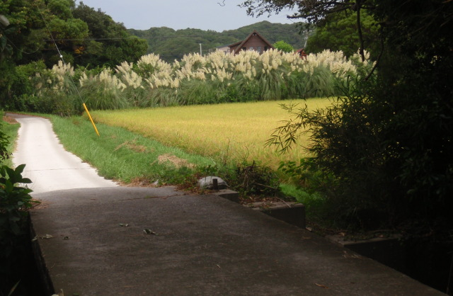